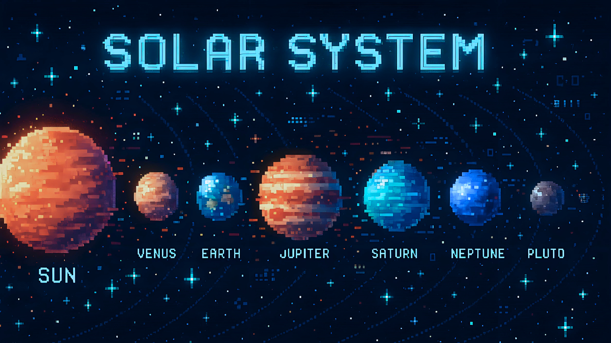

Penguin's Wonderland
✨ Have you ever stared up at the night sky and felt small in the best way? Space is full of silence, mystery, and beauty — and somehow, it feels like it’s quietly watching us too. In this part of my wonderland, I collect little things I’ve learned and felt about what’s beyond our skies.
Small Game: Click on the Image Below üåü

Click on the planets to discover more!